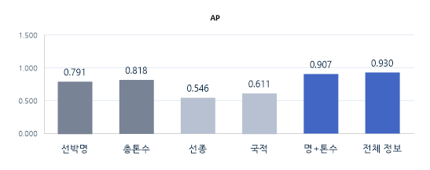

불완전한 항만 기록을
표준 선박 정보와 연결하다
AI 기반 항만 선박 식별
90.74%
전체 과정 1순위 정답률
84.81%
자동처리 대상
99.80%
자동 연결 대상 정확도
내부 평가 데이터 기준 · 외부 일반화 미검증
01 / 21
프로젝트는 5가지 질문에 답한다
01 문제
왜 연결하기
어려운가?
→
02 방법
어떻게 선박을
찾는가?
→
03 검증
얼마나 잘
찾는가?
→
04 자동화
어디까지
맡길 것인가?
→
05 서비스·한계
실제로 어떻게
활용할 것인가?
문제 → 방법 → 검증 → 자동화 → 서비스·한계
발표의 다섯 질문과 흐름
02 / 21
같은 선박도 서로 다르게 기록된다
개념 예시 · 실제 관측값이나 동일 선박 확인 사례가 아님
항만 기록
표준 선박 정보
HYUNDAI NO.7
HYUNDAI 7
28,310 · Cargo · Korea
28,450 · General Cargo · KOR
↔
같은 선박일 수 있다
값이 완전히 같지 않아도 같은 선박일 수 있다.
완전 일치만으로는 동일 선박을 판단하기 어렵다.
04 / 21
입출항 기록 한 건을 이렇게 처리합니다
01
기록 입력
선박명·총톤수
선종·국적
02
전처리
표기·분류 통일
결측값 구분
03
후보 검색
전체 78,595척에서
최대 100척
04
비교·순위 결정
이름·총톤수가 핵심
선종·국적은 보조
05
신뢰도 확인
후보 수·점수 차이로
처리 방법 구분
자동 연결
사람 검토
입력 형식을 정리하고 후보를 좁힌 뒤, 신뢰도에 따라 처리 범위를 나눈다
전체 설계 · 세부 기준과 성능은 뒤에서 단계별로 설명
03 / 21
선박 정보를 비교하기 위한 전처리
실제 프로젝트 데이터 예시 · 원본 값과 비교용 표준값을 별도로 보존
항목
실제 원본 기록
비교에 사용할 값
선박명
WADI-ALBOSTAN / Wadi Albostan
둘 다 WADIALBOSTAN
총톤수
168208 / 161969
숫자로 변환, 차이 6,239
선종
원유운반선 / Tanker
둘 다 LIQUID_TANKER
국적
파나마 / Panama
둘 다 PAN
결측값
빈칸 / Marshall Islands
MISSING · 정보 없음
표기 차이는 정리하고, 실제 값 차이와 정보 부재는 구분한다
05 / 21
정보를 추가·제외하며 식별력을 비교했다
4개 정보 그룹의 15개 조합과 전체 정보의 항목별 제외 실험 · 선박 그룹 분리 기준
01 단독 사용
02 정보 추가
03 하나씩 제외
선박명만
총톤수만
선종만 / 국적만
선박명 + 총톤수
보조 정보 추가
전체 정보까지 비교
전체에서 선박명 제외
전체에서 총톤수 제외
선종·국적도 각각 제외
전처리한 네 가지 정보의 식별력을 같은 기준으로 비교
06 / 21

선박명과 총톤수를 핵심 식별 정보로 선정했다
헷갈리는 오답 후보 평가 · AP는 최종 1순위 정답률과 다른 지표
기록–후보 구분 성능 · AP
선박명·총톤수를 핵심으로, 선종·국적을 보조 정보로 활용
07 / 21
이름과 총톤수가 비슷해도 다른 선박일 수 있다
TRAIN_02008 실제 비교쌍 · 후보 구성 설명용이며 모델 순위가 아님
기준 항만 기록
YUAN-LAN WAN
총톤수 64,775
비교 항목
정답 후보
무작위 오답
헷갈리는 오답
선박명
Yuan Lan Wan
Bequia Express I
Yuan Lian Wan
총톤수
64,572
670
64,573
실제 관계
같은 선박
다른 선박
다른 선박
선박 ID
53686
76895
45382
쉬운 오답만 비교하면 실제로 헷갈리는 상황을 놓칠 수 있다
08 / 21
오답비교 후보를 추린 뒤, 다시 뽑거나 늘려서 결과를 점검했다
많은 오답 비교쌍에서 기록별로 어려운 후보를 추리고, 선별의 영향을 확인
01 후보를 다시 뽑아도 비슷한가?
같은 평가 기록 150건에서 후보 재선별
96.00~96.67%
1순위 정답률이 비슷하게 유지
02 후보를 늘려도 비슷한가?
같은 평가 기록 300건에서 후보 수 확대
100척
1,000척
92.67%
89.67%
후보가 늘면 정답 선택이 더 어려워짐
재선별 결과는 안정적이었지만, 후보 수를 늘리면 성능이 낮아졌다
후보 재선별 150건 / 후보 수 확대 300건 · 서로 다른 평가 기록의 별도 진단 고정테스트 오답 비교쌍
09 / 21
전체에서 후보를 찾고, 정답 선택까지 평가했다
검색부터 최종 선택까지 평가 · 2,344건 중 2,127건 정답
전체 78,595척에서 최대 100척을 검색한 뒤 최종 선택
1. 정답을 후보에 포함
97.61%
후보 검색 성공 비율
2. 최종 1위로 선택
90.74%
전체 과정의 정답률
전체 성능을 확인한 뒤, 후보 안에서 고르는 능력을 별도로 점검
10 / 21
정답이 포함된 후보에서 선택 능력을 따로 확인했다
평가 조건: 정답 1척 + 헷갈리는 오답 99척
평가 2,344건
후보 중 정답 선택
93.47%
1위로 맞힌 비율
정답을 상위 후보까지 보면
상위 3척
95.90%
상위 5척
96.50%
상위 10척
96.67%
후보 안에서 고르는 능력
학습 9,878건 / 평가 2,344건 · 같은 선박은 학습과 평가에 겹치지 않도록 분리
11 / 21
전체 검색·선택 과정에서 틀린 217건을 분석했다
전체 검색·선택 평가에서 2,344건 중 2,127건 정답, 217건 오답
후보 검색에서 실패
56건
정답 선박이 후보 안에 없었음
후보 중 최종 선택에서 실패
161건
정답이 있었지만 다른 선박을 1위로 선택
실패의 74.2%가 최종 선택에서 발생해, 혼동한 후보를 우선 분석
전체 검색·선택 평가의 오류 분해 · 오류 원인 규명과 개선 효과 검증은 별도 과제
12 / 21
후보 검색 실패 56건에서 시작한 식별 성능 개선
정답이 후보에 없으면, Ranking 모델도 정답을 찾을 수 없다
① 문제 발견
② 후보 검색 보완
③ 안전장치 추가
④ 최종 검증
56
건 누락
후보 확대
위험 후보 억제
15
0
건 복구
건 손상
→
→
→
정답 선박이
후보에 없었음
한글↔영문 표기를 고려한
KL 후보 검색 추가
이름뿐 아니라 톤수·국적도
함께 확인해 잘못된 선택을 줄임
V4.2 검증 PASS
Top1
89.93%
후보에서 자동 연결
84.64%
자동 연결 정확도
99.80%
후보를 더 넓게 찾고, 잘못된 후보가 1위가 되는 위험까지 억제
V4.2 검증 결과 · 99.80%는 자동 연결 대상으로 선별한 기록 기준, 밑의 결과는 후보를 뽑은 후 결과
143/ 21
자동 연결과 사람 검토를 나누어 오류 위험을 관리했다
161건 대응 방법
적용 결과
후보가 1개이거나
1·2위 점수 차이 ≥ 0.20
기준 충족: 자동 연결
그 외: 사람 검토
자동 연결 1,988건 (84.81%)
정답 1,984건 / 오류 4건
대상 정확도 99.80%
사람 검토 대상 356건
전체 오류 217건 중 4건이 자동 연결 대상에 포함됐다
전체 평가 2,344건 / 자동 연결 대상 1,988건 · 기준은 최종 평가 전에 고정, 학습 데이터의 교차검증(OOF)에서 여러 기준을 비교한 뒤 정한 값
14 / 21
자동 연결 오류 4건은 같은 선박에서 반복됐다
4건 모두 Glovis Captain을 Glorious Leader로 잘못 연결
정보
입력 기록
정답 선박
오답 선박
이름
글로비스 캡틴
Glovis Captain
Glorious Leader
총톤수
57,225 / 57,410
59,760
57,692
선종
자동차운반선
PCC
PCC
국적
마샬 제도
South Korea
Bahamas
제공 데이터에서 확인
국적은 달랐지만, 기준 선박 정보를 확인하니
입력 기록과 정답 선박은 같은 배였음
외부 자료와 대조
2024년 원래 마샬 제도에서 대한민국으로 국적 변경
총톤수는 정답보다 오답 선박에 더 가까웠음
국적 변경 이력과 여러 제원을 함께 확인해야 한다
국적 변경 시점(2024): 제공된 확인 이력 기준 · 같은 선박의 시점별 제원 차이 사례
15 / 21
기능 테스트 1,500건을 통한 서비스 개선
검토가 필요한 이유를 구분해 사용자가 다음 행동을 알 수 있도록 개선
① 기능 테스트 결과
② 검토 251건 원인 분석
③ 서비스 개선
→
→
1,500건 테스트
1,249
건 자동 식별
검토 251건
0
건 처리 실패
77
건
정보 부족
GT·국적 등 누락 정보가
후보 구분에 필요
174
건
일반 검토
정보가 있어도 후보 간
판단이 명확하지 않음
기존 자동 식별 / 검토 필요
개선 3단계 결과 분류
자동 식별
식별 근거가 충분한 결과
정보 부족
GT·국적 등 추가 확인 정보 안내
검토 필요
자동 연결 없이 사용자 검토 유지
※ 정보가 일부 누락되어도 식별 근거가 충분하면 자동 식별 유지
검토 이유를 구분해, 사용자가 무엇을 확인해야 하는지 안내
검토 251건 = 정보 부족 77건 + 일반 검토 174건
16 / 21
검증 한계를 확인하고, 원인 추적을 위한 개발자용 페이지를 마련했다
합성 데이터 반복 테스트 확대
1,500건 → 3,000건
모델 판단 오류와 데이터 자체 문제를
구분하기 어려운 한계 확인
향후 개선 항목으로 관리
진단 기능 보완
개발자용 페이지를 별도로 생성해 데이터 다운로드 지원
후보 목록 · 모델 점수 · 순위 · 자동 연결 판단 결과 등 개발자용 데이터 제공
문제 발생 지점 추적
데이터 / 후보 검색 / 모델 판단 / 자동 연결 기준
문제의 원인을 확인하고, 지속적으로 개선할 수 있는 구조를 구축했다
17 / 21
CSV 파일로 사용할 수 있는 서비스를 구현했다
로컬 CSV 서비스 구현 · 실제 운영 시간·비용 절감 효과는 아직 측정하지 않음
CSV 업로드 → 선박 식별 → 자동 연결·검토 분류 → 결과 다운로드
입력 보호
최대 5,000행 제한
결과 파일 재업로드 차단
오류 대응
사용자에게 수정 방법 안내
상세 오류는 내부 로그에 기록
출력 확인
오류·빈 보고서 처리 확인
특수문자 안전 표시 확인
자동 연결 결과와 사람이 확인할 후보를 구분해 제공
18 / 21
선박 식별과 자동 연결·검토 분류를 구현했다
선박 찾기
선박명과 총톤수를 중심으로 비교
전체 과정 정답률 90.74%
처리 나누기
자동 연결과 사람 검토를 구분
자동처리 84.81% · 대상 정확도 99.80%
서비스 제공
검토 위험도와
확인할 유형 안내
CSV 결과에 검토 위험도·유형을 함께 제공
높음
1위 정보 충돌 / 더 적합한 상위 후보 존재
중간
후보 경합 / 한글·영문 이름 표기 확인
낮음
GT·국적·선종 등 정보 부족
다운로드하는 검토 HTML 보고서에도 위험도·검토 유형 표시
검토 목록 자동 정렬
높음
중간
낮음
→
→
순서
내부 평가 성과 요약 · 실제 항만 데이터 적용과 남은 검증은 다음 장에서 설명
19 / 21
실제 항만 자료에 맞춘 입력 처리 개선이 필요하다
기본 형식은 변환했으며, 자료별 차이를 반영한 보완이 필요
확인한 데이터 차이
필요한 개선
대회 자료와 다른 컬럼 구성
선종 대신 한글 선박용도 제공
사용한 자료에는 국적 정보 없음
컬럼 변환·입력 검사 보완
선박용도·선종 연결 기준 점검
국적 누락 등 예외 처리 점검
자료의 형식·분류·누락 정보에 맞게 입력 처리를 보완해야 한다
출처: PORT-MIS 선박입출항현황 · 식별 정확도와 개선 효과는 추가 검증 필요
20 / 21
Q&A
대회 데이터 출처
DACON · 항만 문제해결을 위한 AI 기술 공모전
실제 항만 데이터 출처
PORT-MIS · 선박입출항현황
21 / 21